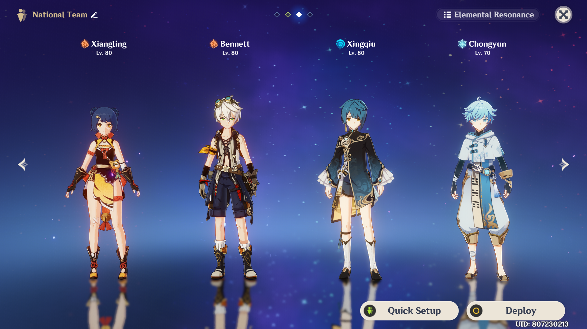
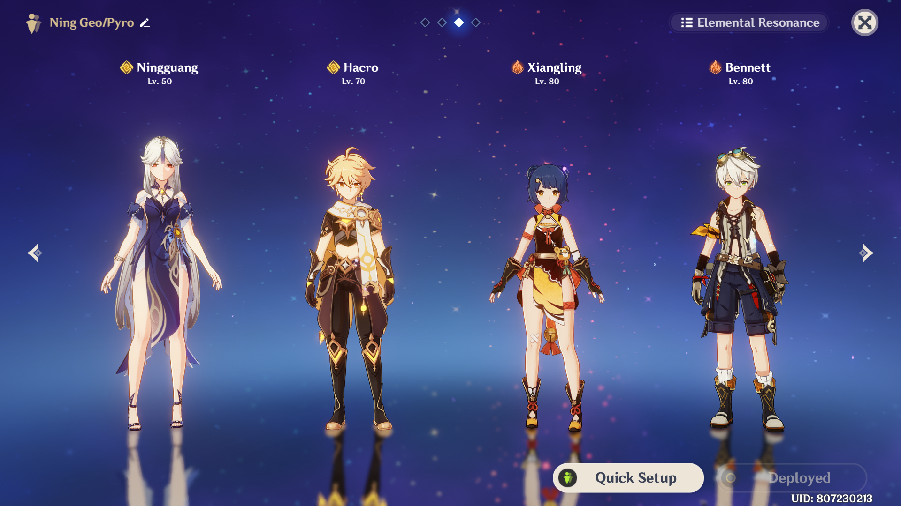
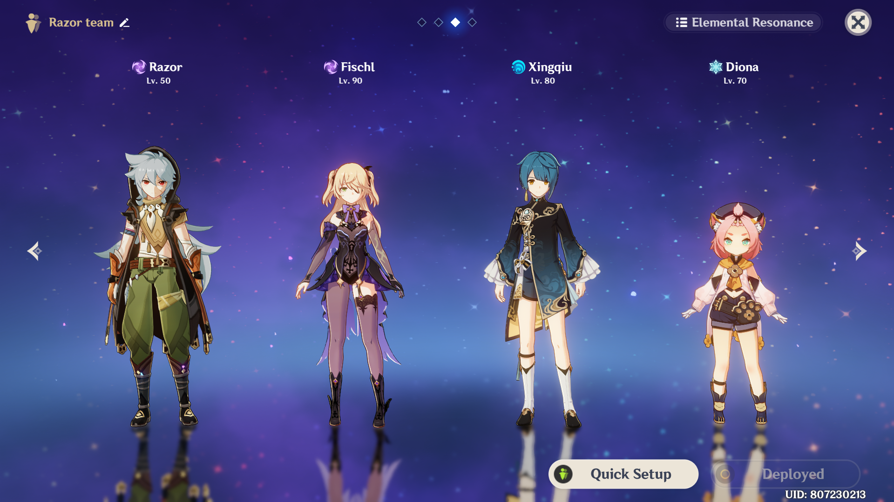
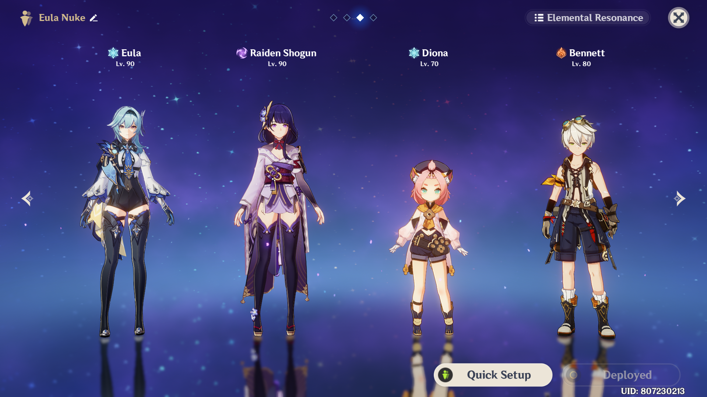
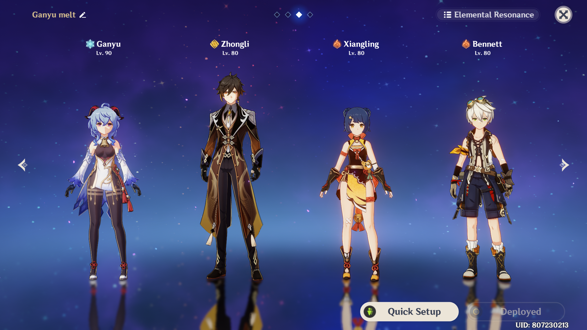
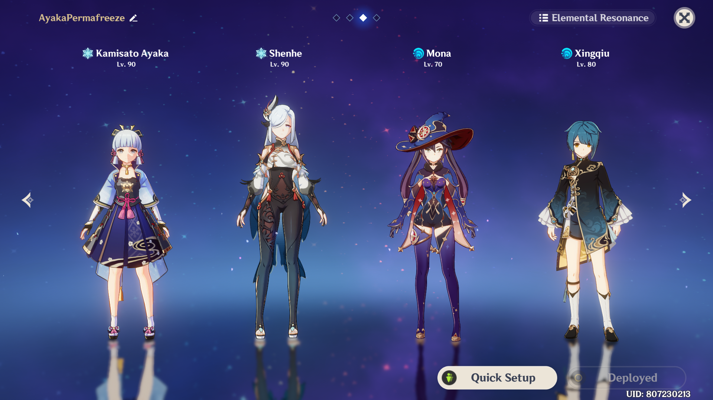

Hello and welcome! To the website will give you different infos and guides relating to Genshin Impact characters. These infos contain how to increase your maximum damage output, best character builds, and best team compositions. It will also contain different strategies on how to beat the spiral abyss(abuse) and get a perfect clear in the current abyss rotation. If there are any mistakes among the information given, please inform me immediately.
Team Compositions:
Are you wondering who to use with who in Genshin Impact? Well, this section covers the different team compositions that are both fun to play and effective in countering different enemies. This part is split into 2. The Free to Play(F2P) teams and the Pay to Win(Whale) teams
Free to Play teams(F2P)
National Team

The current strongest free to play team that uses elemental reactions to maximize damage. This team was popularly called the secret 5 stars as they have high multipliers and incredible rotations. This team was first introduced by the chinese community, hence the name "national team".
Pros:
Cons:
Whale-like damage despite being a free to play team
Requires a lot of investment in time
Ningguang GeoPyro Team

A free to play team that is great in both offensive and defensive capabilities. The constant crystallize reaction give an unlimited amount of shields for the team. This allows you to do continuous damage without the interruption of enemy attacks
Pros:
Cons:
Good damage, Infinite shields from the crystallize reaction
Innefective against enemies that are resistant to both geo and pyro
Razor Charged/Conducted Team

A fun team composition that allows you to go unga bunga with our favorite wolf, Razor. This team is a great team that deals great amounts of physical damage.
Pros:
Cons:
Great against enemies with negative-low resistance to physical damage
Innefective against ruin mobs as they have ~70% physical resistance
Pay to Win teams(Whale)
Eula Nuke

A popular whale team that deals incredible amounts of Physical and Electro damage. With this team, even Spiral Abyss may seem like a child's playground.
Pros:
Cons:
Speedrun team that can kill bosses in seconds
Useless against enemies that require continouos elemental damage(Abyss Lectors/Heralds)
Ganyu Melt

A team that heavily focuses in the melt reaction. This team has been used for a long time and is still considered to be one of the best teams.
Pros:
Cons:
Incredibly strong melt damage, Covers the weaknesses of the cryo and pyro element
Requires good aiming when shooting Ganyu's charged attack
Ayaka PermaFreeze

A team that heavily focuses on freezing the enemies. This team is best for people who do not want to dodge nor use a shield as you always have your enemies frozen.
Pros:
Cons:
Incredible amount cryo damage, incredible effective against enemies such as the abyss Lectors and Heralds
Frozen effect does not work on specific bosses, innefective against enemies whon are resistant to cryo